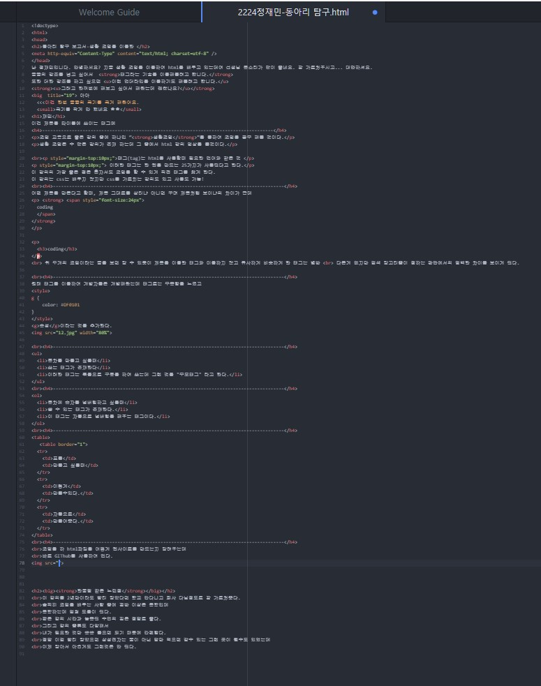

동아리 탐구 보고서-생활 코딩을 이용한
난 정재민입니다. 안녕하세요? 지금 생활 코딩을 이용하여 html을 배우고 있는데여 선생님 목소리가 많이 좋네요. 잘 가르쳐주시고... 대단하셔요.
글꼴의 강조를 넣고 싶어서 태그라는 기술을 이용해볼려고 합니다.
또한 더한 강조를 하고 싶으면 이런 언더라인을 이용하기도 해볼려고 합니다.
그러고 한꺼번에 해보고 싶어서 해봤는데 괜찮나요?
아아
<<<이건 한번 글꼴의 크기를 크게 해봤어요.
크기를 작게 안 했네요 ㅎㅎ
재민
이건 제목용 타이틀에 쓰이는 태그에
--------------------------------------------------------------------------------------
코딩 교육으로 좋은 강의 중에 하나인 “생활코딩”을 통하여 코딩을 공부 해볼 것이다.
생활 코딩은 수 많은 강의가 존재 하는데 그 중에서 html 강의 영상을 볼것이다.
태그(tag)는 html을 사용할때 필요한 언어와 같은 것
이러한 태그는 한 웹을 만드는 25가지가 사용된다고 한다.
이 강의의 가장 좋은 점은 혼자서도 코딩을 할 수 있게 직접 태그를 찾게 한다.
이 강의는 css는 배우지 않지만 css를 가르치는 강의도 있고 사용도 가능!
--------------------------------------------------------------------------------------
어떤 제목을 만든다고 할때, 제목 그대로를 살리냐 아니면 꾸며 제목처럼 보이냐의 차이가 큰데
coding
coding
위 두개의 코딩이라는 글을 보면 알 수 있듯이 제목을 이용한 태그와 이용하지 않고 유사하게 비슷하게 한 태그는 별반
다른게 없지만 검색 알고리즘이 정하는 판단에서의 명백한 차이를 보이게 된다.
--------------------------------------------------------------------------------------
원래 태그를 이용하여 개발자들은 개발해왔는데 태그로는 부족함을 느꼈고
속성이라는 것을 추가한다.
--------------------------------------------------------------------------------------
- 목차를 만들고 싶을때
- 쓰는 태그가 존재한다
- 이러한 태그는 묶음으로 구분을 하여 쓰는데 그런 것을 "부모태그" 라고 한다.
--------------------------------------------------------------------------------------
- 목차에 숫자를 넘버링하고 싶을때
- 쓸 수 있는 태그가 존재한다.
- 이 태그는 자동으로 넘버링을 해주는 태그이다.
--------------------------------------------------------------------------------------
| 표를 |
만들고 싶을때 |
| 이렇게 |
만들수있다. |
| 자동으로 |
만들어준다. |
--------------------------------------------------------------------------------------
코딩을 하 html파일을 어떻게 웹사이트를 만드는지 알려주는데
바로 GIThub를 사용하여 연다.
(절대로 귀찮아서 사진 크기나 위치 설정 안한거 아니에요.)
깃허브는 무료로 사이트를 열수 있게 해주는데 자신이 만든 것을 사람들에게 보여줄수있게 설정해야 무료이지만
사이트를 열고싶지만 자본이 없는 사람들에게는 감사하다.
한줄평 같은 느낀점
이 강의를 2년만이라도 빨리 알았다면 학교 안다니고 회사 다닐정도로 잘 가르쳐준다.
솔찍히 코딩을 배우는 사람 중에 절반 이상은 독학인데
독학하는데 엄청 도움이 된다.
짧은 강의 시간과 농축된 수업의 질은 정말로 좋다.
그리고 강의 종류도 다양해서
내가 필요한 것만 쏙쏙 들으면 되기 때문에 간편핟다.
정말 이걸 빨리 알았으면 삼성전자는 꿈이 아닌 맘만 먹으면 갈수 있는 그런 곳이 될수도 있었는데
이제 알아서 아쉽게도 그런것은 안 된다.